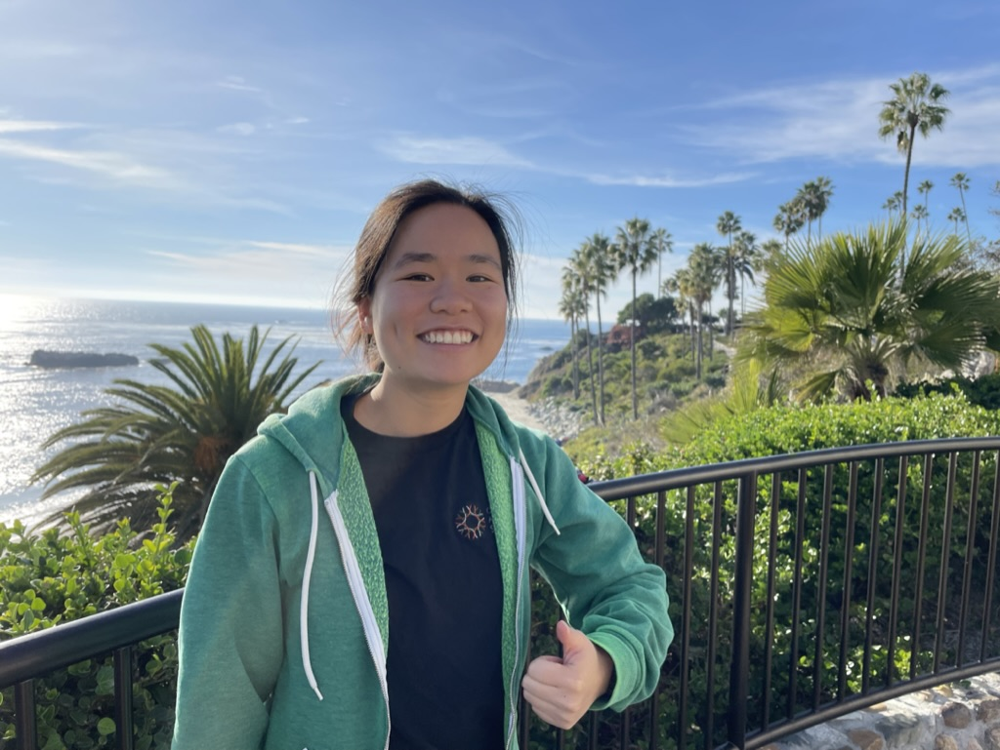

Hello! I am an aspiring software engineer currently majoring in Computer Science at the University of California, Irvine (Class of 2025). Growing up in San Francisco, I was fascinated by the emerging technology developed in the surrounding area. During my sophomore year of high school, I enrolled in an introduction to computer programming class without any prior knowledge or expectations. After coding a graphic of a pig karate chopping a wooden board while holding a strawberry-frosted donut in JavaScript for my second assignment, I was captivated. From experimenting with the creation of static images to implementing functional programs, I was inspired by the extent to which computer science seamlessly integrates creative problem solving, critical thinking, and curiosity.
Since then, I have worked on more complex programs. From developing software for local nonprofit organizations and museums to contributing to projects that aimed to address the nation's most pressing challenges, I strive to continue to use computer science as a means to contribute to social good.
In my free time, I enjoy playing guitar, playing basketball, solving jigsaw puzzles, and building mini block models.